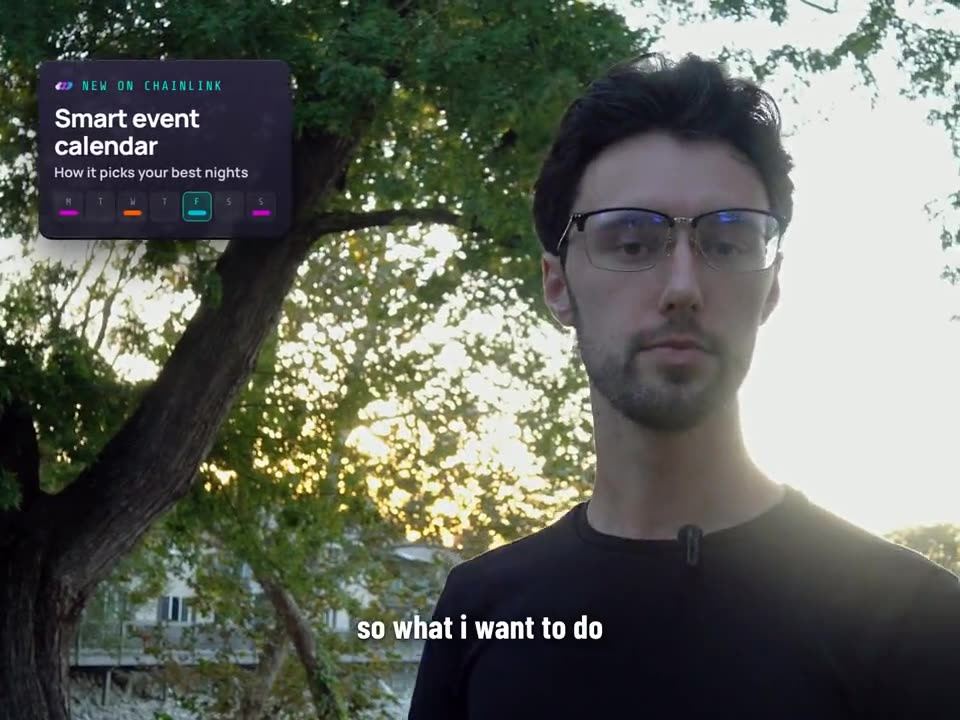
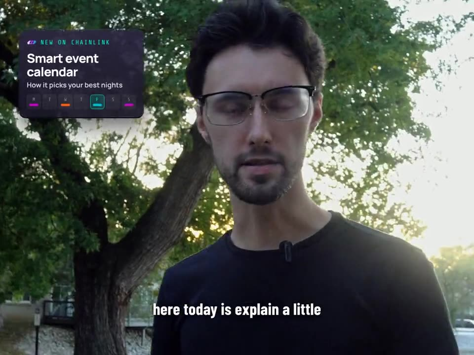
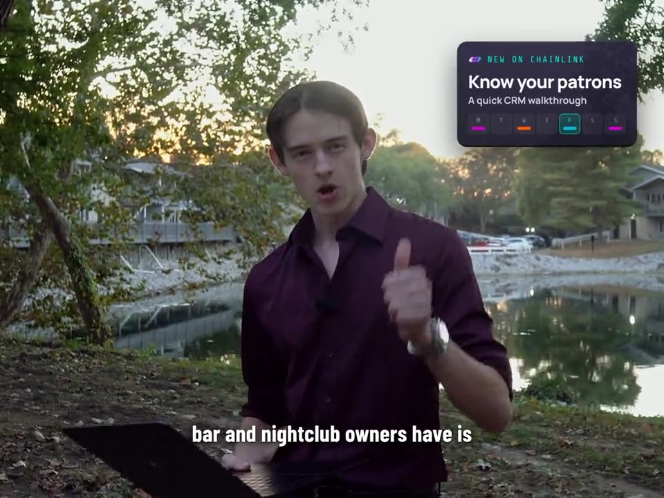
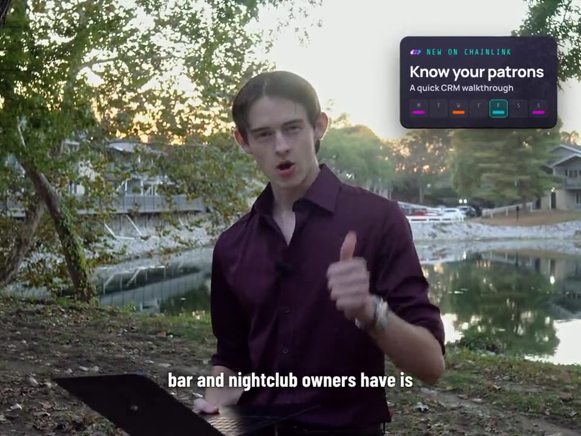

Editron
An AI agent I trained to edit video the way I do.
Designer & trainer (solo) · Oct 2026 – present
Problem
Editing is my bottleneck. Could an AI agent learn my style well enough to produce edits I'd approve?
Constraints
- Must match my pacing, take selection and color, not generic AI editing
- Work inside my real DaVinci Resolve timelines and node structures
- Every output reviewed by me before release
Key result
Approved edits for 3 real projects; dead air cut from 15.8 s to 3.6 s in one calibration pass
STAR
Situation
Every edit depended on my time. Generic AI editing tools didn't cut like I do.
Task
Design and train an agent (built as a Grok Bot) to select clips, cut, and grade to my standard.
Action
- Showed it my recent productions so it learned my pacing and style
- Taught clip selection with examples of good vs bad picks
- Turned each correction into a written rule or automated check (21+ so far)
- Moved it into Grok Build to work directly in my Resolve timelines and node structures
- Iterated color grades against my own graded exports
- Automated B-roll selection with speech detection (exclude A-roll) and motion analysis (drop shaky moments)
Result
Edits approved for 3 real projects. One calibration pass cut dead air from 15.8 s to 3.6 s. A first-draft montage became a story-driven cut after the timeline lessons.
Design decisions
| Decision | Options / choice | Tradeoff |
|---|---|---|
| Rules over re-prompting | Each correction becomes a persistent rule or check | More upfront writing, but mistakes don't repeat |
| Move into the real timeline | Work in Resolve instead of exporting cut lists | More setup, but frame-level control and real node structures |
| Subtle highlight lift on low-light footage | Subtle lift vs strong lift vs denoise | Strong lift looked flat and denoise looked grainy, so both were rejected |
Testing & iteration
- Side-by-side review of my edit vs Editron's in the same style
- Every version reviewed; up to five versions before approval
- Before/after checks on pacing, take selection and grade
- Pacing tuned over rounds of my feedback into one rule: cut only pauses over ~0.5 s, keep ~0.26 s of breathing room, first word within 0.15 s (tighter for clipped speech, looser for dragged)
- B-roll: first pass of 3 s snippets rejected; second pass kept 38 full, steady takes of 6–60 s
Visuals




Next steps
- Expanding into photo editing